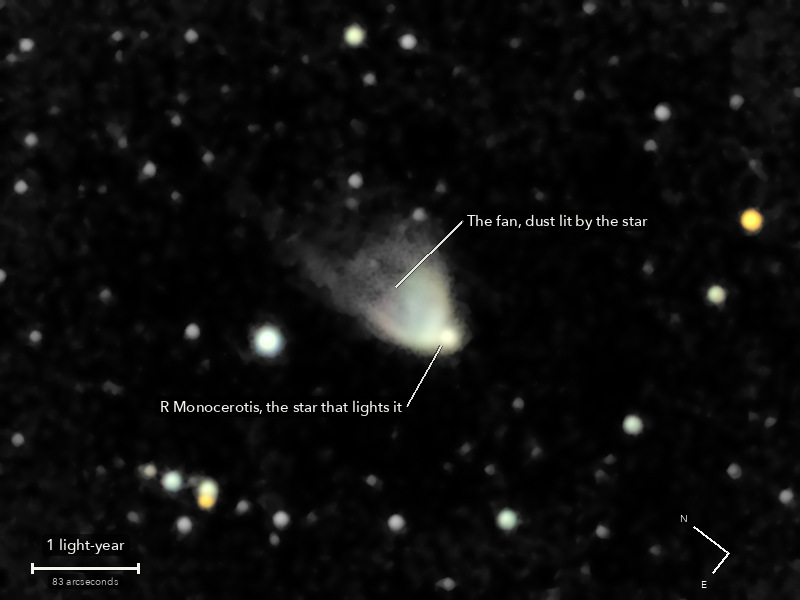

Hubble's Variable Nebula
NGC 2261, a fan of dust lit by the star R Monocerotis
A fan of dust lit from its tip by a young star, like a torch beam in fog. It changes: clouds of dust close to the star cast shadows that sweep up the fan over weeks and months, so no two pictures of it taken a season apart are the same. Edwin Hubble studied it for years, and in January 1949 he made it the first thing photographed with the 200 inch telescope on Palomar.
What you are looking at

Swipe sideways to see the rest. Tap the picture for full size.
- Distance
- About 2,500 light-years
- This picture spans
- 7.5 light-years; the fan shown is about one light-year long
- The light left
- Around 470 BC, about when Socrates was born
- Honest note
- A soft picture: the stars came out wider than earlier in the night and thin cloud took the last frames, so the moving shadows are too fine to see here. The pale green tint is the camera's, not the nebula's
For photographers
6.25 minutes of light on a soft night; thin cloud took the last six frames.
- Exposures
- 25 x 15 s at ISO 3200: 6.25 minutes
- Frames
- 32 taken, 25 kept. The first after the slew was dropped by rule. The last six were lost to thin cloud: the stars fell to about half their brightness while staying sharp, under a brighter sky, and were coming back within minutes, which is cloud and not dew. None trailed
- Sampling
- 0.777 arcsec per pixel: one pixel per 2 x 2 colour cell, never enlarged. Stars 6.3 arcsec wide (half-flux) in the stack, against about 5 earlier in the night: the whole run is soft. Nothing was sharpened
- Field
- 10.4 x 7.8 arcmin: an 800 x 600 crop from a stack of 38.7 x 25.5 arcmin, nothing resampled, not turned (north 53 degrees anticlockwise of up)
- When
- 13 October 2026, after midnight, over 17 minutes. About 50 degrees up
- Registration
- Rotation and shift on about 150 stars, 0.40 to 0.64 px rms; the field turned 0.39 degrees. The air spread red from blue by about half an arcsecond: measured on the stars and taken out in the one resampling
- Calibration
- No darks and no flat frames were taken. The night's flat, built from the open sky of the NGC 891 run, and 126 dust shadows it left, measured on this run's own sky and divided out. Nothing could be judged under the fan itself, and nothing there was touched. Hot pixels from the run itself
- Stacking
- RAW colour planes (no demosaic), hot pixels by 3 x 3 median, registered on stars with rotation, sigma-clipped weighted mean. One sky constant per colour per frame; in the picture only, a sky plane per colour is subtracted as well. Noise 4.5 to 4.8 times lower than one frame (5.0 expected from the weights)
- What is real
- Each of these repeats in the odd and the even halves of the frames. The comet-shaped fan, 64 times the scatter of blank sky: 91 arcsec long from the star and 83 across at its widest. The star at its southern tip: a bright point in the brightest part of its own nebula, not a clean star image. A second bright knot 15 arcsec north-east of the star. Brighter edges, with a darker channel along the axis 23 to 41 arcsec out
- Not seen
- The faint northern end of the fan, out to the catalogue's 2 arcmin, and the fine filaments and shadows that make it variable: the stars are 6.3 arcsec wide. The fan's outer edge is grainy and smoothed by the finish, so texture there is not detail
- Colour
- No saturation added. The fan measures near white: red : green 1.00 and blue : green 0.92 in the camera's daylight white balance. The camera's own colour matrix turns that into a pale cream-green: the tint is the rendering of a near-white measure, not a claim about the nebula
- Finish
- Arcsinh stretch; colour from an 8 px average, and only where there is signal. Black at the 65th percentile, S-curve 0.15. The dark sky is set near black and smoothed (median 5 px, bilateral 5 px): 5.2 percent of the picture is exactly black
- Telescope
- Celestron 8SE Schmidt-Cassegrain: 203 mm aperture, 2,082 mm focal length by plate solve of this stack, f/10.3
- Camera
- Sony a6000, stock, at prime focus: APS-C 23.5 x 15.6 mm, 6000 x 4000, 3.9 micron pixels, RAW
- Mount
- Sky-Watcher EQ6-R, unguided. Set down without polar alignment, about 5 degrees off the pole; aligned from four plate-solved photos (about 1 arcminute), both axes driven from that model
© 2026 Brad Gessler · Celestron 8SE (8 inch, f/10.3) and Sony a6000 on an EQ6-R · San Francisco Bay Area · night of 12 October 2026
Capture and mount: Observatory (Elixir on a Raspberry Pi 3). Stacking: numpy, OpenCV, rawpy. Plate solving: astrometry.net. Stacked from the camera's RAW frames. Nothing generated.
© 2026 Brad Gessler. The pictures and the words are his own; all rights reserved.